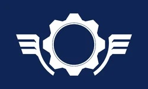

¿QUIENES SON LOS LOCUST?
 La Coalición de Gobiernos Ordenados, coloquialmente conocida como la Coalición o la CGO, es un colectivo militar supranacional e intergubernamental que se originó en el planeta Sera durante la Era del Silencio. Tras el descubrimiento de la fuente de combustible conocida como Imulsión, los estadistas visionarios de ocho naciones soberanas -colectivamente referidos como Los Padres- unieron sus países de origen en la Coalición con el fin de proteger sus reservas de Imulsión de las demás potencias. Los principios rectores de esta nueva alianza se esbozaron en el Canon Octus, lo que resultó en una doctrina política que defendía el colectivismo, el militarismo y natalismo. Con sede en la capital tyrana de Ephyra, la Coalición permitido originalmente miembros su representación en el órgano de deliberación conocido como el Consejo de los Soberanos; sin embargo, la presión de la guerra casi omnipresente resultó en su eventual disolución, solidificando el poder en manos de su ejecutivo, -el Presidente- y el liderazgo militar. Varias décadas después del descubrimiento de la Imulsión, la CGO experimentó la primera amenaza importante para su existencia. Tras el colapso de la economía global, la Unión de Repúblicas Independientes, una alianza militar de naciones con escasas o nulas reservas de Imulsión, intentó aprovechar el control del suministro global de la Imulsión de la Coalición, lanzando una guerra mundial de setenta y nueve años conocida como las Guerras del Péndulo. Los dos frentes se pudieron caer entre sí a un estancamiento antes de que la CGO capturará los diseños para una superarma orbital, el Martillo del Alba, en la Batalla en los Campos de Aspho. Con la asistencia del físico Adam Jonathon Fenix, la CGO armó con éxito la tecnología, desplegando el MdA contra la URI en la Batalla de Bonbourg y convenciendo a su liderazgo a la rendición. Aunque algunos pequeños reductos se negaron a aceptar el armisticio, las Guerras del Péndulo terminaron y la mayoría del planeta experimentó la paz por primera vez en casi un siglo. La Coalición victoriosa surgió de este conflicto como la superpotencia dominante en Sera.
HISTORIA DE LA CGO